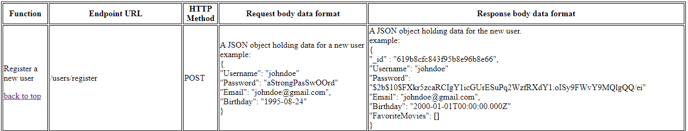
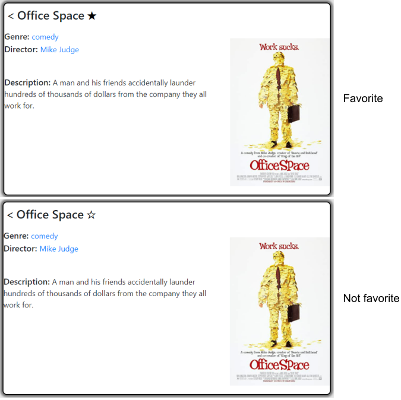
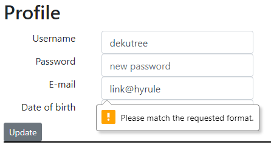

The challenge
To create a full-stack web application using the MERN stack (Mongo, Express, React, Node) that allows users to create, read, update, and delete user data, and view information about different movies, genres, and directors. This application was built over one month as a part of CareerFoundry’s web development immersion course.
The process
I built a back-end server using Mongo and Express with a RESTful API allowing users to create, update, read, and delete data. Then, I designed a client-side application using React with Redux that uses the API to view information about movies and update the user’s personal information.
The goal
A full-stack, responsive, and scalable web application demonstrating my both my back-end and front-end design capabilities that lets users view information about movies stored in the database and update their personal information.
My development process
Backend (Mongo and Express)
Choosing a database
I hosted the database online using the MongoDB Atlas free tier service. The online client is easy to use, and it was easy to connect my application to the online database. If my app were to gain traction, I could also easily upgrade to a paid plan if I needed the additional storage space and features offered by the paid plans.
Choosing a hosting platform for my API

Another important decision was how to host the server for my API. Thankfully, there are also some good free options available for this. For this application, I used Heroku to host my API. With Heroku, it is relatively easy to deploy new builds and view logs for troubleshooting purposes.
Building the API endpoints
Before implementing any API endpoints, I needed to determine what I wanted a user to be able to do with the data. Keeping a list of every action that should be possible by a user of the API directly informed the API endpoints that would be created. For example, because a user should be able to view data about movies, there needed to be an endpoint that requested the movie data and returned it to the user. However, because I do not want users to modify the movie data by adding, deleting, or making changes to the movies, there is no endpoint allowing that sort of action to be taken. If new movies need to be added, that needs to be done directly within the database, which only I have access to do.
After documenting the necessary endpoints, I was ready to build them. I set up a server using Express and a few different libraries that would give me the functionality I needed without me having to do a lot of the work myself. Some of the key libraries used were mongoose, which allowed me to translate JavaScript into Mongo to communicate with the database, express-validator, which ensured that data sent to the server was formatted properly, and body-parser, which made it easy to work with JSON data in my requests and responses. After building my endpoints, all the required functionality of my API was in place.
Authentication
Although my API was technically up and running at this point, I wanted to implement some security measures to make sure anonymous users were unable to use the API. To achieve this, I implemented http authorization using the passport library. This allows a user to log in and receive a JSON web token (JWT) which is stored in their browser. Each time the user makes a request to my API, a valid JWT is then required to have access to the endpoints. The only endpoint that does not require credentials is the registration endpoint. This is because if a user is not registered, they clearly do not have a valid JWT yet.
It should be noted that although my API is somewhat secure using the JWT approach, I did not implement any further user permissions aside from the JWT. That means that technically, anybody with a JWT (which is anybody who decides to register) could proceed to delete and/or modify all the user data saved in the database, though the client-side app would not facilitate that behavior. If this were a commercial application, this would be considered a grave security flaw, but my purposes, I’ve achieved what I set out to do—allow users to login to their account.
Front-end (React)
Having a working API was an accomplishment in itself, but without a well-designed user interface, who would be able to use it? Essentially, only developers would know how to access the data, and it wouldn’t be very fun. Therefore, I moved on to designing the client-side application that would interface with my API.
Choosing the right framework
Choosing a framework for my client-side application was crucial because it would dictate the way I write code for the entire project. React was a good choice because, like Mongo, it is well supported by a large community of users and is a tool that is highly in-demand. With React, I was able to divide each small bit of functionality into a component piece that could be used and reused wherever it was needed.
Build tools
Due to the large number of files and imported packages in the project, it was necessary to use build tools to bundle and minify my code to reduce the file sizes sent to the client and help make the application work on all modern browsers. For this project, I used Parcel to handle my builds. With Parcel, I was able to have all of my React components transpiled in real time into code readable by all modern browsers, bundled into as few files as possible, and minified to reduce the file sizes.
Application state management
As I was building the user interface, the component hierarchy became more and more complex, and it became cumbersome to manage the state of my application. I began encountering bugs caused by different components disagreeing on state values, and patching the bugs made the code harder to read and maintain.
For example, there is a star-shaped button on each movie’s details page that allows the user to add or remove the movie from the user’s list of favorite movies. This button was my kryptonite for a while. I could get the button to toggle the state of the favorite movie and successfully send the update to the server, but if I clicked away from the movie and then returned to it, the button would be in whatever state it was before I had clicked on it! This was very frustrating, as it seemed that the movie details view “forgot” that I had toggled the favorite status of the movie.
I needed a state-management system that was more suited to my needs, where each component would get their state values from a single source, and no components could disagree on the state. That’s where Redux came in.
Redux entered my application like a superhero. After a little bit of setup and refactoring of my code, I was bug-free, and my code was significantly easier to follow along with. Additionally, my code is now more scalable, and if I decide to add additional features later, I can do so with less fear of breaking other parts of my app. With Redux, my whole application’s state is stored in one Redux store, and when one component changes the state, all the other components that use the state immediately have access to the updated value.
Data integrity
When working with forms, it’s important to perform client-side data validation to prevent the user from sending badly formatted data (or worse, malicious code) to the server. Technically, I do already have validation on the server side, so a user wouldn’t be able to send malicious code or bad data, but it would make for a poor user experience if I didn’t perform client-side checks as well. In this application, I chose to use the validation features built into React forms to check the data before sending it to the server. That way, the user is notified if they need to fix something before an API call is made, and the forms clearly communicate to the user what they need to fix.
Choosing a hosting platform for my client-side
There are several free options available for hosting websites, and for this client-side application, I chose Netlify to get some exposure to other hosting options. Netlify is pretty handy. I was able to set up automatic builds, so whenever I push new code to the main branch, the code will automatically bundle itself and deploy to the Netlify server. Having that in place makes it less of a chore to push through bug fixes and updates, giving me more time for what I want to be doing, which is developing the app!
Retrospective
The goal of the MyFlix application was to create a full-stack web application using the MERN stack (Mongo, Express, React, Node) that allows users to create, read, update, and delete user data, and view information about different movies, genres, and directors. This was my first full-stack application, and I learned a ton of new things along the way. I can see there is a still quite a bit about security that I could learn if I want to take my API to the next level. A key improvement would be to allow users to modify only their own data instead of having full access to the API. I really enjoyed working with Redux. After wrapping my mind around how it works and getting it set up, it completely transformed my app by increasing the scalability and readability of the code.
This project has been an excellent venture into the world of full stack development, and I am excited to continue working with more complex applications. I look forward to where my next projects might take me!